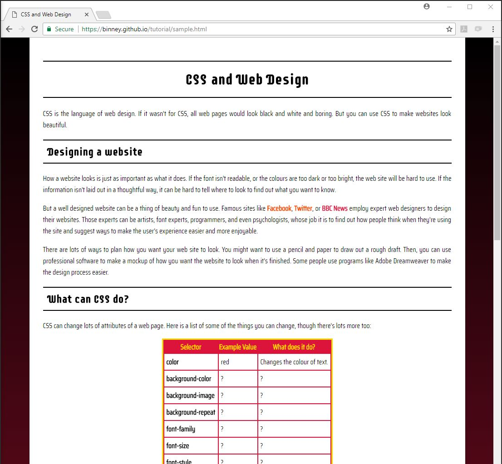
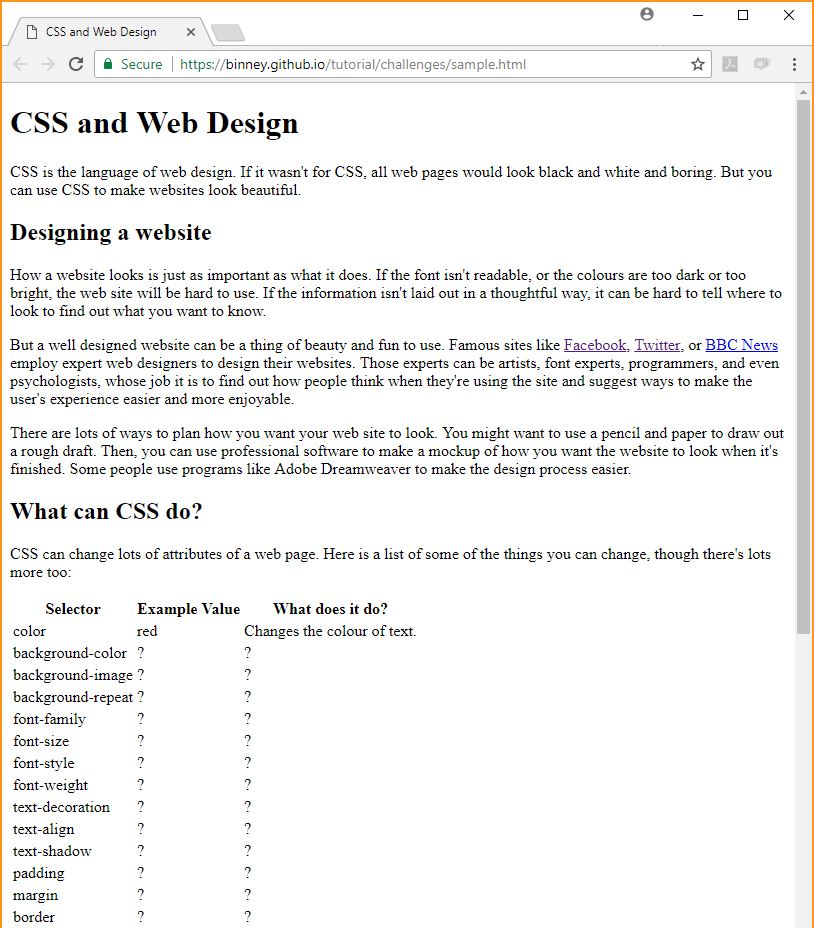

So you've learned some CSS? Time to put it to the test! You're going to download a sample HTML page, which looks like this.
Open the version of the web page on your own computer and compare it to the one online. You'll notice they look pretty different:
|  |  |
| Online version | What you're (hopefully) seeing on your own version |
That's because the version online has a CSS file which changes its appearance, whereas the one on your computer doesn't.
Your challenge - should you choose to accept it - is this:
You'll get points according to how similar your website looks to the online version, so keep your eyes peeled for differences between the two! Every CSS attribute you'll need is in the table on the sample page. Go through them one by one and google them to find out what they do and how to use them.
If you get stuck, ask Sarah for help or cheat using Developer Tools! You can check the CSS that's applying to a web page by right clicking on the page and selecting Inspect. Good luck!